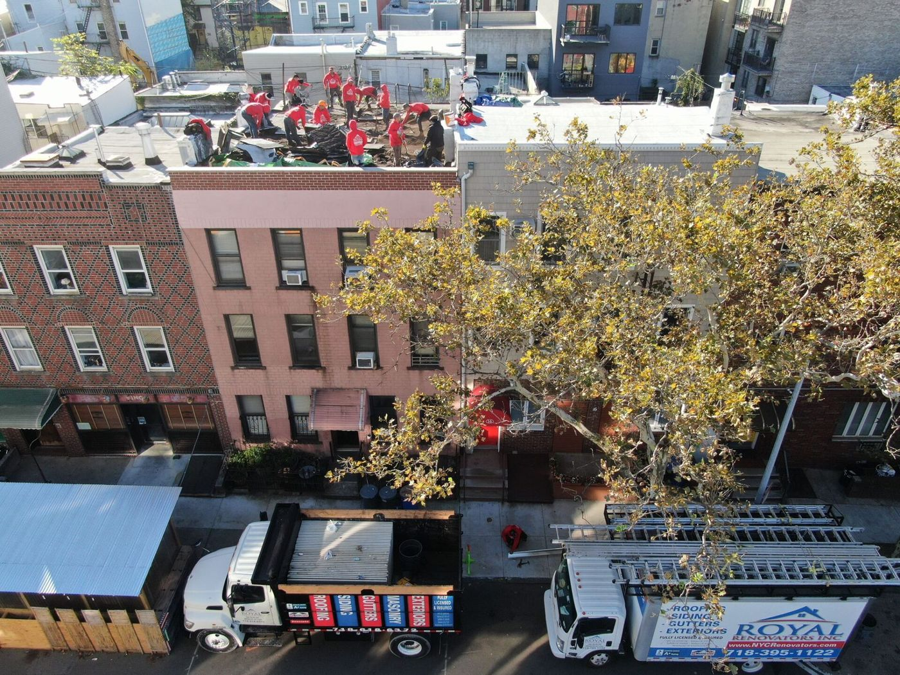

Brownstones & row houses
Flat roof membranes, flashing, drainage, and parapet details all need to work together above older masonry and closely spaced homes.
Focus: flat roofs & parapetsRoyal Roofing & Siding Brooklyn
From brownstones and row houses to mixed-use and commercial buildings, Brooklyn roofs rarely ask for the same solution. We bring local building knowledge and practical roofing experience to every property we work on.


Who we are
Royal Roofing & Siding Brooklyn serves homeowners, landlords, and property managers who need dependable roofing and exterior work. Our Brooklyn team is independently operated and shares the crew standards that have defined Royal Renovators Inc. since 1988.
The borough's building stock demands attention to what is already there: aging flat roofs, masonry details, narrow access, pitched roofs, and neighboring properties close on every side. We start with the condition of the building, then recommend work that fits its structure and the owner's goals.
That local focus shapes the questions we ask and the details we check. It helps us approach a brownstone repair, a shingle replacement, and a commercial roof as different projects with different priorities.
See how we workBuilt for the borough
Brooklyn moves from historic streets to dense commercial corridors within a few blocks. The roof and exterior plan should respond to the property in front of us.
Flat roof membranes, flashing, drainage, and parapet details all need to work together above older masonry and closely spaced homes.
Focus: flat roofs & parapetsShingle systems call for careful inspection of the roof deck, ventilation, and roof edges before a repair or replacement is planned.
Focus: deck & shinglesThese roofs often carry equipment and see regular access. We consider the roof's use, drainage, and disruption to the people below.
Focus: access & drainageYour building has its own needs.Tell us what is happening, and we can discuss the next step.
Request a Free EstimateOur work
Roofing is our core specialty, with exterior work that helps the whole building perform.

We repair and replace flat and pitched roofs, including EPDM, TPO, SBS, and shingles. Material choice follows the roof's condition and how the property is used.
Explore roofingLeaks, damaged flashing, worn surfaces, and drainage concerns deserve a close look. We identify the issue, explain the options, and focus the work where it is needed.
Explore servicesThe exterior is a connected system. Siding, gutter, and masonry work can improve weather protection while respecting the building's appearance and structure.
Explore exteriorsBefore a recommendation
A visible leak or worn roof surface is only the starting point. The useful question is how water, materials, and building details interact, so the proposed work addresses the condition instead of only its most obvious symptom.
Where roofing meets masonry, walls, or trim, the transition deserves attention. We look at those edges when deciding what a repair or replacement needs to cover.
Low points, outlets, and gutters influence where water goes after a storm. Understanding that path helps us discuss the right scope for the roof and exterior.
Skylights, vents, and rooftop equipment interrupt the roofing surface. Their surrounding details matter when we assess leaks and plan installation.
The existing surface, deck, and roof type inform whether a focused repair or broader replacement makes more sense for the property.
Our approach
Good roof work starts before materials arrive. We look at the property, explain the reason for our recommendation, and plan the work around the building's needs.

We discuss the concern, the building type, and what you have noticed before deciding where to look.
We examine the relevant roof and exterior areas so the recommendation responds to the actual condition.
We explain the proposed scope, materials, and practical options before the work begins.
Our crew focuses on proper installation, communication, and the details that support lasting performance.
Project planning
A Brooklyn roof project happens above homes, businesses, and neighboring properties. The plan needs to account for more than the material on top.

Row houses and dense blocks can leave little room around the property. We consider how a crew reaches the roof and moves through the site before work begins.
Homes, tenants, and businesses may continue using the building during a project. Clear scope and practical sequencing help owners understand what the work involves.
A roof may meet masonry, siding, gutters, skylights, or another roof type. Those junctions belong in the discussion because they affect the whole exterior.
What owners can expect
A useful recommendation should account for the building, explain the material choice, and give the owner a clear scope to consider.
Roof shape, masonry edges, access, and nearby properties all help define what the work needs to address.
We discuss roofing and exterior systems in relation to the roof type, its use, and the conditions the materials will face.
We describe what we see and what the proposed work covers so owners and managers can make the next decision.
Where we work
From brownstone blocks to busy commercial streets, our Brooklyn work responds to each property's roof type, access, and building details.
Explore Brooklyn service areasNeighborhoods we serve
Start a conversation
Whether the job is a leak repair, a new roof, or an exterior update, call our team to discuss the next step.
Every day · 7:00 am – 11:00 pm